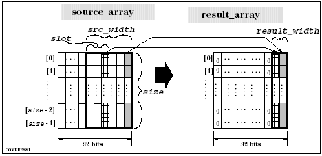
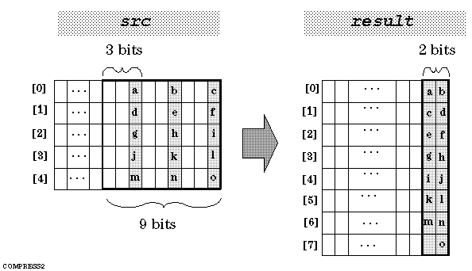

DSP_COMPRESS
This API removes the specified number of bits from each element of an array and stores the results in another array.
DSP_COMPRESS copies the rightmost bit of each bit group
(slot) to the rightmost bits of
result.
source_width specifies the number of valid bits for the src elements. slot specifies the number of bits in each bit group. So, the source_width bits of each element are divided into bit groups.
Bit groups start from the left side of the source_width bits. Remaining bits are ignored. For example, if repeat = 3 and source_width = 10, then bit 0 of the src elements is ignored.

If result_width < (source_width ÷ slot), the results are stored in result as shown in the following figure.
For this case, result must be declared as an array that has more than (array_size × source_width)/(slot × result_width) elements.

This API is defined in the header file /opt/hp93000/soc/prod_com/include/MAPI/libdsp.h.
Syntax
DSP_COMPRESS(ARRAY_I& src, ARRAY_I& result, INT src_width, INT result_width, INT slot); DSP_COMPRESS(INT *src, INT *result, INT size, INT src_width, INT result_width, INT slot);
I/O |
Parameter |
Description / Range |
|---|---|---|
I |
src |
Source array |
O |
result |
Result array |
I |
size |
Number of elements to be processed 1 ≤ size × slot ≤ 2097152 size ≤ (size of src) size ≤ (size of result) |
I |
src_width |
Number of valid bits of source array src_width ≤ 32 |
I |
result_width |
Number of valid bits of result array result_width ≤ src_width / slot |
I |
slot |
Number of bits in each bit group slot ≤ src_width |
Example
INT source[8], result[8]; . . DSP_COMPRESS(source, result, 4, 12, 4, 3);
If source has the following elements:
source[0]= 0...0111000111000 source[1]= 0...0000111000111 source[2]= 0...0111000000111 source[3]= 0...0000111111000
Then, DSP_COMPRESS returns the following to result:
result[0]= 0...01010 result[1]= 0...00101 result[2]= 0...01001 result[3]= 0...00110
For each source element, the 12 valid bits are divided into 4 groups. Each group has 3 bits. In each source element, the 3 bits of a group have the same value. DSP_COMPRESS stores the value of each bit group into bit 0 to bit 3 of the result elements. So, 12 bits in each source element are compressed to 4 bits in each result element.